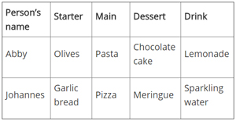

Scratch can be downloaded and worked offline or using the online development and sharing toolkit can add a whole new dimension of crowd sourcing and group development
The LGfL Python tutor provides reactive and developing activities that can be used to understand the core principles of Python language, developing from the coding basics of the HTML tutor
Kodu Games creator can be accessed via free software and shared on Pc or Xbox and can produce high quality 3d games with little programming knowledge beforehand
Code Academy offers a range of learning resources for pupils including Python, Java and HTML
J2Code Environment provides access to Logo activities and environment online as well as teaching materials and a code sharing toolkit
When planning your KS3 teaching, you need to have a clear idea of the requirements of your chosen KS4 course, what KS3 languages will support or allow pupils in Y10/11 to complete coursework to a high quality of outcome?
BBC Bitesize Programming resources focusing on data structure
BBC Bitesize Programming resources focusing on data arrays
Programming
Use two or more programming languages, at least one of which is textual, to solve a variety of computational problems; make appropriate use of data structures [for example, lists, tables or arrays]; design and develop modular programs that use procedures or functions 
Computer programs, like algorithms, are comprised of sets of rules or instructions, but they differ in that they need to be written in a precise (or formal) language that a computer can interpret. There are thousands of programming languages – some are appropriate for teaching purposes, some are not. Language choice is discussed in more detail in the Planning section.
The programme of study states that pupils need to use two or more programming languages. Why is this necessary? When pupils can use more than one language they are better able to understand the concepts behind programming. This allows them to easily switch to other languages in the future. Learning to use a programming language can be compared with learning the grammar of a foreign language – once you have learned one, you should more easily pick up another from the same family. 
Pupils may have some experience of programming from primary school, probably through using a visual programming language such as Scratch.
To solve computational problems, a set of basic programming concepts need to be mastered, beginning with sequence, selection and repetition. An example of these in use might be in creating a password log-in system.
- Sequence: putting instructions in the right order to make something happen. For example, “Enter username; Enter password; Check details”.
- Selection: using conditions to control the flow of a program. For example, “IF username =“Sam” and password = “j377y78” THEN display welcome message ELSE display error message”.
- Repetition: the ability to execute a sequence of instructions many times until a certain condition has been met. For example, “WHILE username incorrect or password incorrect DO ask for username and password”.
A data structure is a way of storing and organising related data items so that they can be treated as a single, more abstract, item. Structured data is an important tool when solving computational problems. Pupils should be familiar with the idea of a named variable from KS2 – a small-sized short-term data store used in a program to store a single value such as test_score or name. A single name may also be used to refer to an organised collection of simple variables (a data structure), such as an array, a table or a list. 
An array is a sequence of data items of fixed length, in which each item is referred to by its position. A list is a sequence of data items whose length can vary over time.
Pupils should be familiar with tables if they have used spreadsheets. Tables allow data to be structured and sorted by user-defined labels. For example, pupils might create a table to record the food that people ordered in a restaurant.

Note that the mechanisms for structuring data, and for naming and referencing data structures, differ from language to language.
Modular design is very important when solving complex problems as it allows programmers to decompose problems into manageable chunks (modules) that can be independently tackled and tested. These modules are then combined to make a whole functioning program.
A solution to a problem can be broken down into subproblems. These can be called procedures, functions, methods or subroutines, depending on what they do and what language they are written in.
For example, in our Snakes and Ladders game we have modules for DISPLAYBOARD and TAKEATURN. These can be further broken down, for instance, into:
- function ROLLDICE, which may return a random number between 1 and 6
- procedure MOVE(2), which may follow the instructions to move the counter 2 squares.